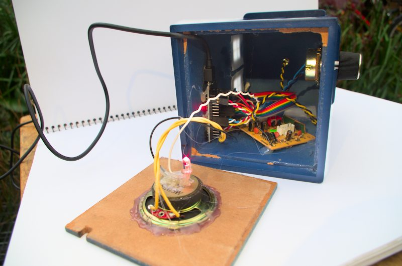
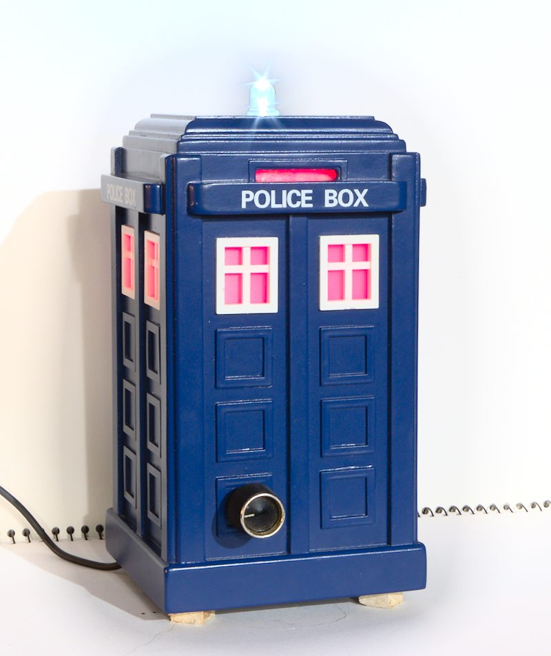
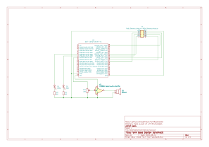

|
Farm ESP32 LoRa PJON base station
|
Remote sensors use PJON over LoRa radio to communicate. The Thingsboard Gateway MQTT API is used to connect on the Thingsboard side.
See here for other sensors and more information on the system.
Written by Jotham Gates August 2023
 
The Github repository containing all design files and code is here.
BaseStationCode directory.BaseStationCode/credentials.example.ini and name this credentials.ini. Fill out the settings in this file for the WiFi network to connect to, MQTT broker, Thingsboard credentials and Over The Air (OTA) update settings.Over the air (OTA) updates can be used to update the software on the base station once it has been programmed for the first time. To do this:
credentials.ini to match those currently set on the device.Tardis-OTA from its default Tardis environment (likewise for the TVAnt environemnt for ethernet).The base station uses an ESP32 development board as its base. An SX1278 LoRa radio module breakout board is connected via jumper leads. LEDs are soldered along with their respective current limiting resistors to wires that can be plugged into the ESP32 board. An audio amplifier and speaker can also be connected for alarm functionality. I salvaged this from the sound effects module of a broken children's ride on toy car.

I originally planned to use the build in DAC of the ESP32 to play sounds on alarm conditions. At this point I haven't succeded in this (currently using the TunePlayer library to play simple monotonic songs instead). I did come across the ESP32-A2DP library that allows the use of this unit as a terrible sounding bluetooth speaker.
This sketch is the bt_music_receiver_to_internal_dac example from the ESP32-A2DP library with the addition of flashing lights.